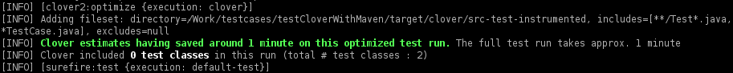

This page contains best practices for using Clover for Maven 2 and 3.
On this page:
Test Optimization in a CI environment
There are two recommended ways to utilize Clover's test optimization in a CI (Continuous
Integration) environment, either using a Profile, or to run the goals directly.
NB. Clover
Test Optimization will not work if you have added the clover-maven-plugin to the
default build section of the pom with an execution binding the 'instrument' goal.
Setting up a CI profile
- Add a 'clover.optimize' profile to the project's
pom.xml. - Create a new 'Gateway' build plan in your CI server. A 'Gateway' build plan is one that gets run before any others and if successful, triggers any subsequent builds.
The gateway plan should execute the verify phase, with the 'clover.optimize' profile activated. Example:
mvn verify -Pclover.optimize
If your build plan is configured to do a full clean checkout before each build — you will need to ensure the Clover snapshot file is stored in a location that will not be removed between builds. The following configuration added to the
pom.xmlis one option:<configuration> <snapshot>${user.home}/.clover/${groupId}-${artifactId}/clover.snapshot</snapshot> </configuration>Beware however, that this set up will instrument your source and test files and compile them to the usual Maven output location. If you run this command:
mvn deploy -Pclover.optimize
then you will be deploying class files that have been instrumented by Clover
 .
.
Running the Clover goals directly
Add a new build plan with the following command line:
mvn clover:setup verify clover:snapshot
Test optimization on the desktop
Running Clover's test optimization locally is very advantageous. This is achieved using the 'clover.optimize' profile that can be activated like so:
mvn verify -Pclover.optimize
Combining build optimization with site coverage reporting
Maven2 will merge any executions defined in the default build section of the pom, with those defined
in a profile. It is therefore recommended practice to always use two profiles — one for test
optimization and one for generating a Clover report when you generate a site. The clover:instrument
goal forks the build lifecycle ensuring that Clover instrumented sources are kept completely
separate from production sources. This also means that your tests get run twice — which is obviously
not desirable in an optimized build.
The 'clover.report' profile is an example of a build profile to activate when running this command:
mvn site -Pclover.report
Using separate profiles for site generation and Test Optimization is currently the recommended way to
have both a site and a Test Optimization Clover build configured in the same pom.xml.
Test optimization across a multi-module project
By default, Clover will generate a new clover.db and clover.snapshot file
for each module. This means, that if you have tests in module A that cover code in module B, and you
modify code in module B, the tests in module A will not be run. You can achieve the desired behavior
however, by configuring Clover to use a single clover.db and
clover.snapshot for the entire project:
<configuration>
<snapshot>${user.home}/.clover/atlassian-plugins-clover.snapshot</snapshot>
<singleCloverDatabase>true</singleCloverDatabase>
</configuration>
If you have many modules, you may need to set fullBuildEvery to a value higher than the default of 10. See also singleCloverDatabase.
Using clover:setup for non-forked life cycle
The clover:setup is designed to make integration with integration and functional tests a lot simpler than using the forked lifecycle that comes with clover:instrument. It also has the added advantage of not having to run your tests twice.
Executing clover:setup does the following:
- Instruments all source and test files found in
src/main/java, src/test/java. - Copies the instrumented source files to
target/clover/src-instrumented, target/clover/src-test-instrumentedrespectively. - Redirects the Maven project's source and test directories to
target/clover/src-instrumented, target/clover/src-test-instrumented. Subsequent plug-ins in the build life cycle then use these locations as the source directories.
Therefore, executing the following line will instrument all source and test files, compile the instrumented source files, run all tests and then install the compiled and instrumented classes.
mvn clover:setup install clover:clover
WARNING: It is not recommended to deploy your Clover instrumented classes to an external Maven repository.
Note: clover:setup will automatically bind itself to the 'process-sources' phase if defined in the goals list of the plugin's executions.
Cross compilation using Groovy
If you are using cross-compilation with Groovy code, you should ensure that the
clover-maven-plugin:setup goal runs before the GMaven Plugin's gmaven:generateStubs
goal in your pom.xml. Otherwise, you may end up with errors when running the
Clover-for-Maven 2 plugin.
Alternatively, if you run clover:setup directly from the mvn command line,
then this Clover goal will run before the gmaven:generateStubs goal and you will avoid
these errors when cross-compiling Groovy code.
Coloring test optimization
If your terminal supports ANSI escape codes, run your Maven build with the -Dansi.color
flag. Currently a few important log messages dealing with Clover's Test Optimization will be logged
in color:

Build Profiles
The following profiles can be used directly in the pom.xml. This avoids the need to modify the ~/.m2/settings.xml file.
clover.report Profile
<profile>
<id>clover.report</id>
<build>
<plugins>
<plugin>
<groupId>org.openclover</groupId>
<artifactId>clover-maven-plugin</artifactId>
<version>${cloverVersion}</version>
<executions>
<execution>
<id>clover</id>
<phase>verify</phase>
<goals>
<goal>instrument</goal>
<goal>check</goal>
<goal>clover</goal>
</goals>
</execution>
</executions>
</plugin>
</plugins>
</build>
<reporting>
<plugins>
<plugin>
<groupId>org.openclover</groupId>
<artifactId>clover-maven-plugin</artifactId>
<version>${cloverVersion}</version>
</plugin>
</plugins>
</reporting>
</profile>
Clover Optimize Profile
<profile>
<id>clover.optimize</id>
<build>
<plugins>
<plugin>
<groupId>org.openclover</groupId>
<artifactId>clover-maven-plugin</artifactId>
<version>${cloverVersion}</version>
<configuration>
<snapshot>${user.home}/.clover/${groupId}-${artifactId}/clover.snapshot</snapshot>
</configuration>
<executions>
<execution>
<id>clover</id>
<goals>
<goal>setup</goal>
<goal>optimize</goal>
<goal>snapshot</goal>
</goals>
</execution>
</executions>
</plugin>
</plugins>
</build>
</profile>
</profiles>
Clover Optimize, Report, Log and Check Profile
<profile>
<id>clover.all</id>
<build>
<plugins>
<plugin>
<groupId>org.openclover</groupId>
<artifactId>clover-maven-plugin</artifactId>
<configuration>
<targetPercentage>93%</targetPercentage>
<snapshot>${user.home}/.clover/${groupId}-${artifactId}/clover.snapshot</snapshot>
</configuration>
<executions>
<execution>
<id>clover</id>
<goals>
<goal>setup</goal>
<goal>optimize</goal>
<goal>snapshot</goal>
</goals>
</execution>
<execution>
<phase>verify</phase>
<goals>
<goal>clover</goal>
<goal>log</goal>
<goal>check</goal>
</goals>
</execution>
</executions>
</plugin>
</plugins>
</build>
</profile>
Related Links